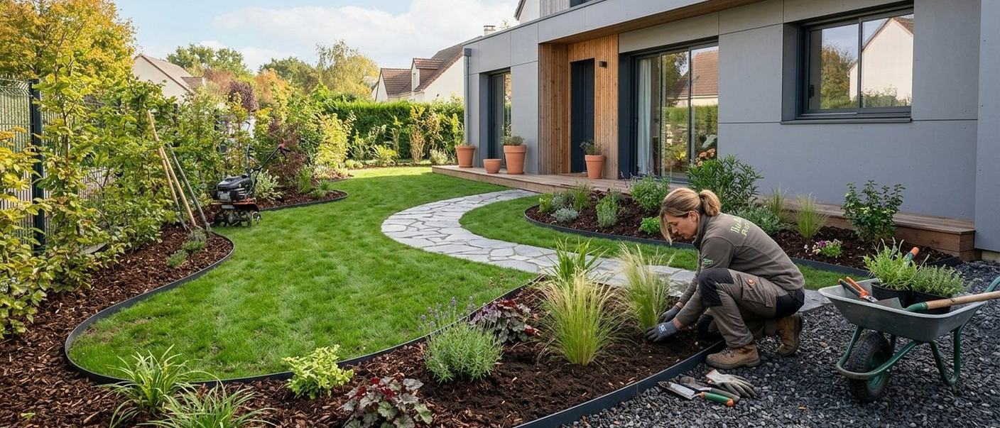

L'Atelier des Terrasses et du Paysage · Gambais (78)
Vos terrasses et vos jardins à Gambais
L'Atelier des Terrasses et du Paysage aménage terrasses et jardins à Gambais, dans les Yvelines. Parlez-lui de votre projet.
Gambais (78) · Devis sur demande
Nos prestations
Des prestations pour vos extérieurs
Terrasses, jardins, plantations, entretien : choisissez ce dont votre extérieur a besoin.
Terrasses et allées
Création de terrasses et d'allées adaptées à votre maison et à l'usage que vous en avez.
En savoir plusCréation de jardins
Aménagement de massifs et de pelouses selon la forme de votre terrain et vos envies.
En savoir plusPlantations
Choix et mise en terre d'arbres, d'arbustes et de vivaces pour structurer et fleurir votre jardin.
En savoir plusEntretien de jardin
Tonte, désherbage et taille de haies pour garder un jardin net au fil des saisons.
En savoir plus
À propos
Un paysagiste à Gambais
Julien Chapey dirige L'Atelier des Terrasses et du Paysage, à Gambais, dans les Yvelines. L'entreprise aménage et entretient terrasses et jardins.
Pour parler de votre projet, appelez directement ou envoyez une demande depuis la page de contact.
En savoir plus
Contact
Un projet de jardin ? Parlons-en.
Décrivez votre projet par téléphone ou depuis le formulaire de contact.
Gambais (78)